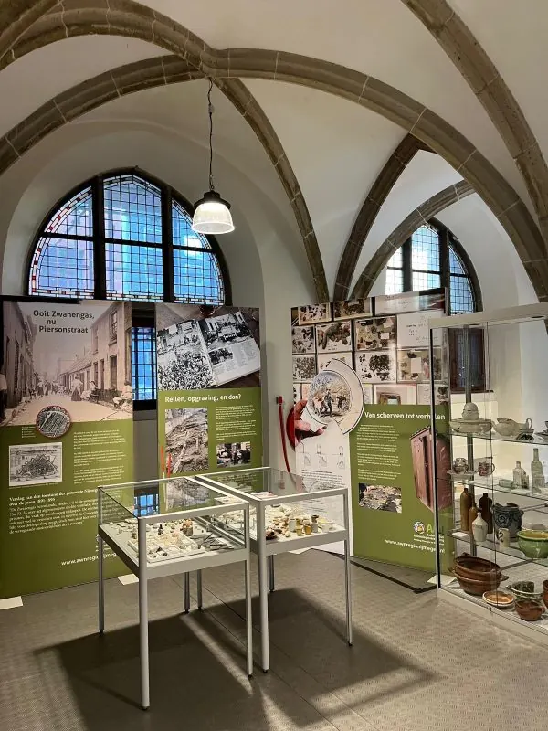
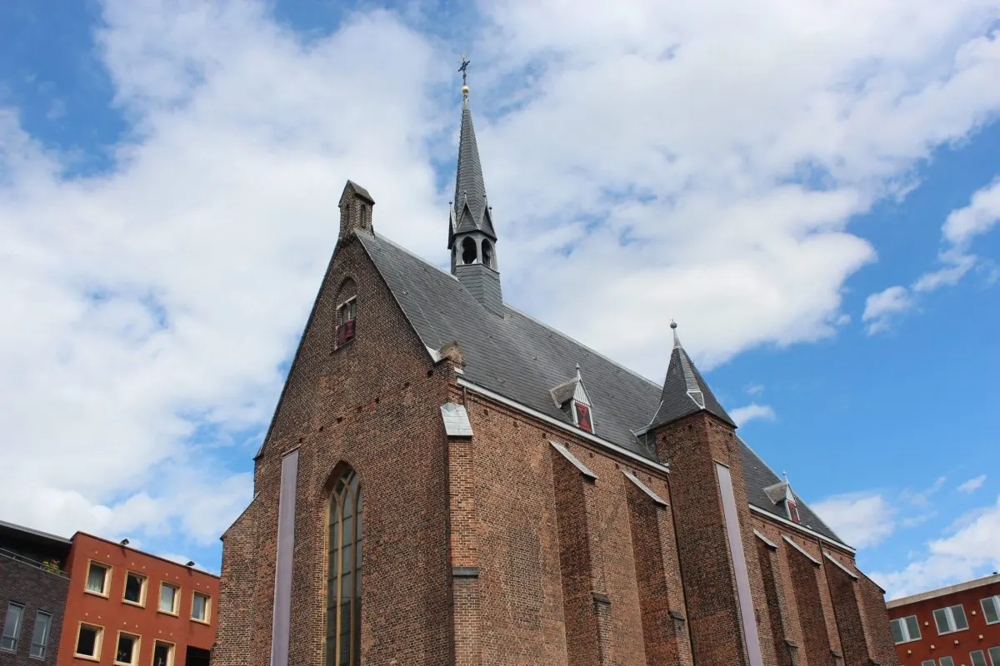
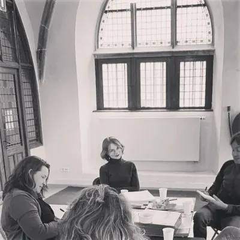
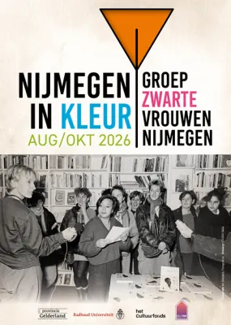

Evenementen bij Huis van de Nijmeegse Geschiedenis
Mariënburg 26, 6511 PS Nijmegen
Binnenkort


Eerder bij Huis van de Nijmeegse Geschiedenis
6okt Lezing: Groep Zwarte Vrouwen Nijmegen: Over oude vrouwen, en de dingen die voorbij gaan29 sep 2026Huis van de Nijmeegse Geschiedenis
12sep
Lezing: Groep Zwarte Vrouwen Nijmegen: Over oude vrouwen, en de dingen die voorbij gaan29 sep 2026Huis van de Nijmeegse Geschiedenis
12sep

Mini-expositie: Van Zwanengas tot Piersonstraat6 okt 2026Huis van de Nijmeegse Geschiedenis 29sepLezing: Groep Zwarte Vrouwen Nijmegen: Over oude vrouwen, en de dingen die voorbij gaan29 sep 2026Huis van de Nijmeegse Geschiedenis
12sep
Open Monumentendag: Mini-expositie Veerkrachtig erfgoed12 sep 2026Huis van de Nijmeegse Geschiedenis 9sepEen Merovingisch grafveld onder de Winkelsteeg9 sep 2026Huis van de Nijmeegse Geschiedenis 6sep
Schrijfworkshop: Groep Zwarte Vrouwen Nijmegen6 sep 2026Huis van de Nijmeegse Geschiedenis 1sep
Expositie: Nijmegen in kleur – Groep Zwarte Vrouwen Nijmegen1 sep 2026Huis van de Nijmeegse Geschiedenis 25augMini-expositie: Generatieportret25 aug 2026Huis van de Nijmeegse Geschiedenis